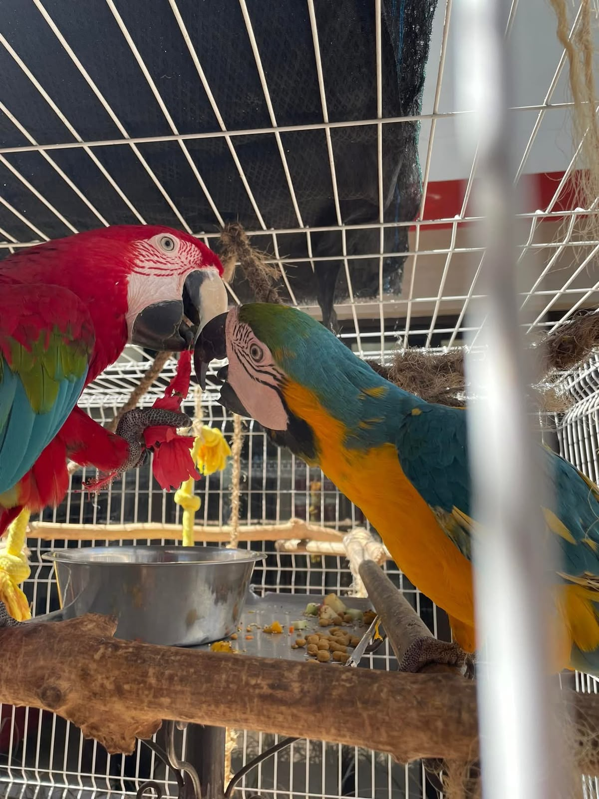
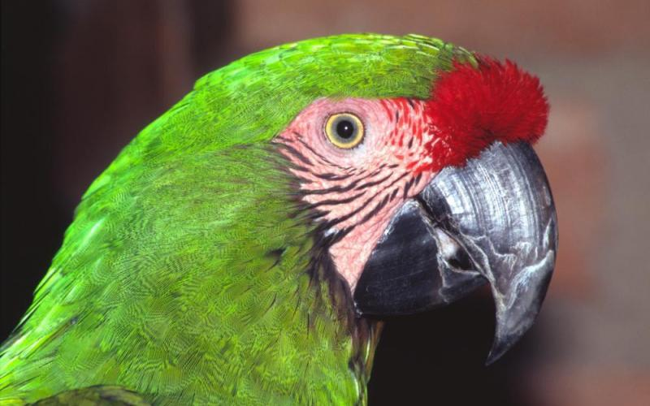
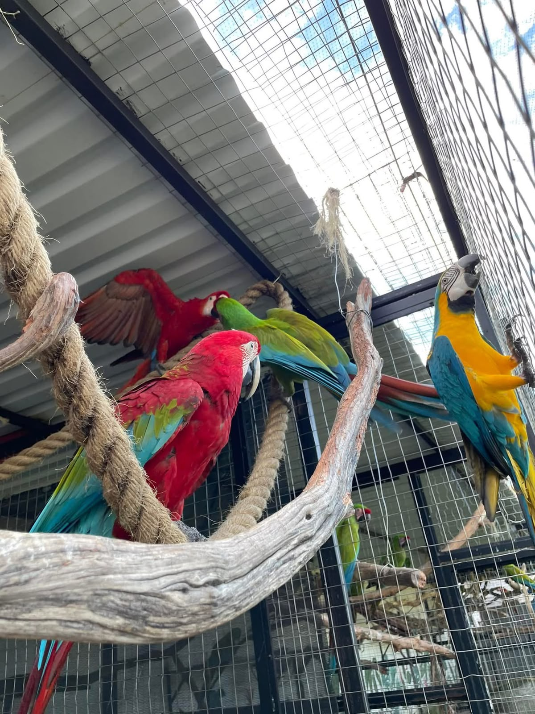
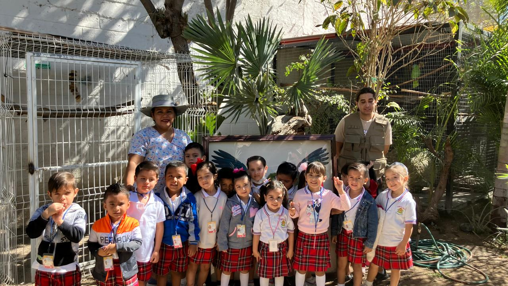

Conservación de psitácidos
Promovemos el conocimiento, la protección y la conservación de guacamayas, loros y otras aves de gran importancia ecológica.
Trabajamos por la protección de la fauna silvestre y la conservación de los psitácidos, promoviendo el respeto por la naturaleza y la participación de nuestra comunidad.

Wildlife Shepherds es una asociación dedicada a la conservación y protección de la flora y fauna, con trabajo enfocado en la región de Puerto Vallarta, Cabo Corrientes y Bahía de Banderas.
Impulsamos una cultura de respeto por los animales silvestres y sus hábitats mediante acciones de cuidado, conservación y educación ambiental.

Promovemos el conocimiento, la protección y la conservación de guacamayas, loros y otras aves de gran importancia ecológica.

La atención de la fauna requiere responsabilidad, conocimiento y compromiso con el bienestar de cada ejemplar.

Compartimos conocimientos y experiencias para inspirar el respeto por los animales y la conservación de sus hábitats.

La educación ambiental ayuda a comprender el valor de la fauna silvestre y la importancia de conservar los ecosistemas. Podemos colaborar con escuelas, grupos comunitarios y organizaciones interesadas en impulsar una cultura de protección.
Solicita informaciónPara conocer las formas de colaboración, actividades educativas o necesidades actuales, comunícate con Wildlife Shepherds.